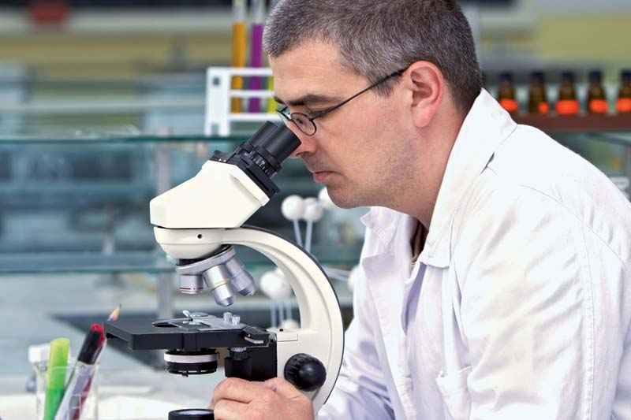
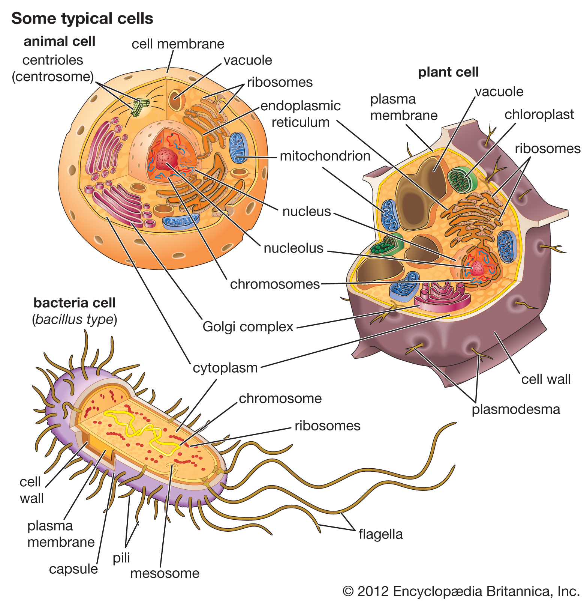
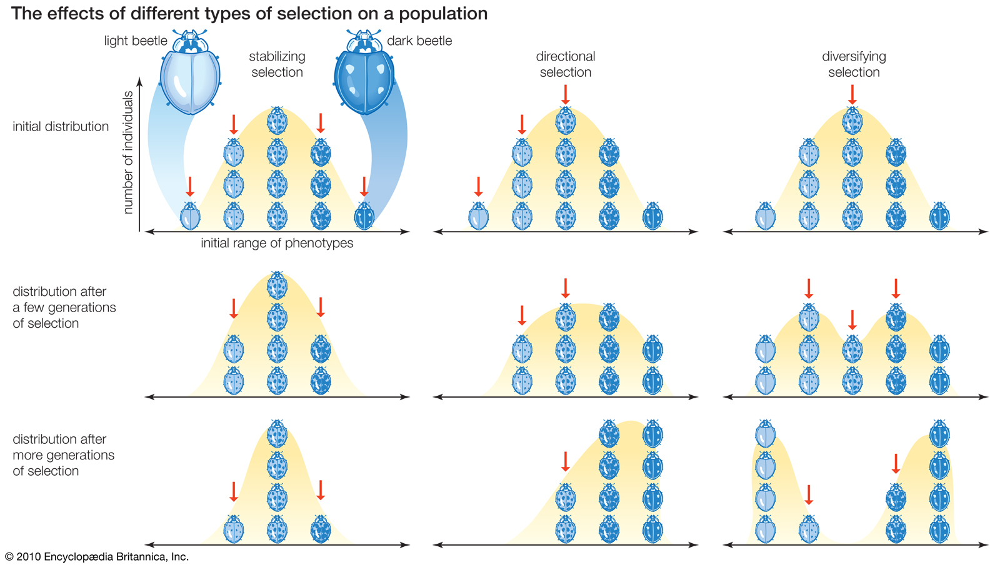
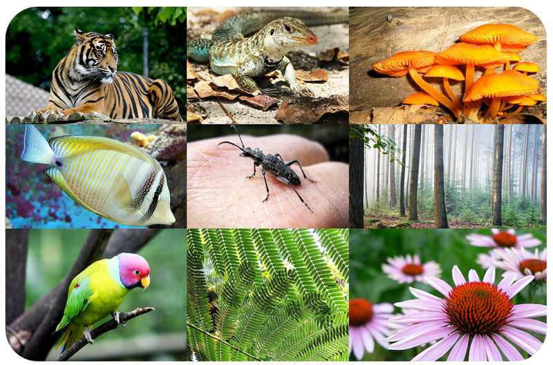

Introduction
the physicochemical aspects of life. The modern tendency toward cross-disciplinary research and the unification of scientific knowledge and investigation from different fields has resulted in significant overlap of the field of biology with other scientific disciplines. Modern principles of other fields—chemistry, medicine, and physics, for example—are integrated with those of biology in areas such as biochemistry, biomedicine, and biophysics.
Basic Concept Of Biology
Biological principles
Homeostasis
The concept of homeostasis—that living things maintain a constant internal environment—was first suggested in the 19th century by French physiologist Claude Bernard, who stated that “all the vital mechanisms, varied as they are, have only one object: that of preserving constant the conditions of life.”
Unity
All living organisms, regardless of their uniqueness, have certain biological, chemical, and physical characteristics in common. All, for example, are composed of basic units known as cells and of the same chemical substances, which, when analyzed, exhibit noteworthy similarities, even in such disparate organisms as bacteria and humans. Furthermore, since the action of any organism is determined by the manner in which its cells interact and since all cells interact in much the same way, the basic functioning of all organisms is also similar.
Evolution
In his theory of natural selection, which is discussed in greater detail later, Charles Darwin suggested that “survival of the fittest” was the basis for organic evolution (the change of living things with time). Evolution itself is a biological phenomenon common to all living things, even though it has led to their differences. Evidence to support the theory of evolution has come primarily from the fossil record, from comparative studies of structure and function, from studies of embryological development, and from studies of DNA and RNA (ribonucleic acid).
Diversity
Despite the basic biological, chemical, and physical similarities found in all living things, a diversity of life exists not only among and between species but also within every natural population. The phenomenon of diversity has had a long history of study because so many of the variations that exist in nature are visible to the eye. The fact that organisms changed during prehistoric times and that new variations are constantly evolving can be verified by paleontological records as well as by breeding experiments in the laboratory. Long after Darwin assumed that variations existed, biologists discovered that they are caused by a change in the genetic material (DNA). That change can be a slight alteration in the sequence of the constituents of DNA (nucleotides), a larger change such as a structural alteration of a chromosome, or a complete change in the number of chromosomes. In any case, a change in the genetic material in the reproductive cells manifests itself as some kind of structural or chemical change in the offspring. The consequence of such a mutation depends upon the interaction of the mutant offspring with its environment.
